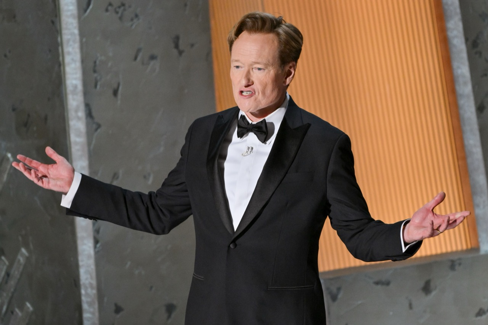

Viral X Post Predicted Wicked Cast Years Before the Movie Was Even Made
In December 2024, a remarkable moment of cultural prescience circulated widely across social media platforms, particularly Twitter/X: a prediction made years earlier that accurately forecast the 2024 Wicked movie casting. The original post, created years before official casting announcements, identified Cynthia Erivo and Ariana Grande as ideal performers for the film adaptation's lead roles—a prediction subsequently confirmed when the actual movie casting remained identical. This peculiar convergence of social media speculation and eventual reality raises fascinating questions about fan prediction, celebrity brand perception, performance casting logic, and internet culture's role in shaping and anticipating media outcomes. The moment became cultural sensation, celebrated across platforms as remarkable example of internet user's intuitive understanding of casting requirements, performer suitability, and industry norms. The original poster received substantial recognition following the movie's release, trending on social media as thousands of users shared the original prediction alongside celebration of its accuracy. This incident exemplifies contemporary internet culture's capacity for distributed intelligence, collective prediction-making, and emergence of accurate forecasts from seemingly random speculation. The phenomenon also illuminates broader questions about celebrity personas, performer brand alignment, and how audiences intuitively understand casting requirements despite lacking formal industry experience. This exploration examines the viral prediction's significance, examining what it reveals about internet culture, celebrity perception, and entertainment industry decision-making processes.
The Original Prediction
The prediction emerged from routine social media activity—a post reflecting personal preferences and casting speculation without explicit inside industry knowledge or unique information access. The original poster identified Cynthia Erivo as ideal Elphaba candidate, recognizing the performer's technical vocal capabilities, emotional depth, and previous theatrical experience qualifying her for demanding musical theater role. Ariana Grande received casting prediction for Glinda the Good Witch, based on her contemporary pop star status, vocal skills, and public persona alignment with Glinda's superficial aesthetic sensibility. The prediction reflected logical deduction available to enthusiastic fans: understanding character requirements, researching performer capabilities, and matching individuals to roles based on visible qualifications. The post gained minimal immediate engagement at time of creation; thousands of such speculative casting posts emerge continuously across social media platforms without generating particular attention. Only retroactively, following official casting confirmation, did the original prediction achieve viral circulation and cultural recognition. This retroactive attention reflects how social media algorithms and user behavior patterns elevate unexpected predictions that subsequently prove accurate. The original post lacked special analytical framework or industry insight; rather, it represented educated fan speculation employing publicly available information about performer capabilities and character demands. This democratization of casting consideration illustrates contemporary entertainment culture's participatory nature; audiences actively engage in creative speculation and prediction, representing form of engaged fandom participation. The fact that fan speculation proved accurate raises questions about whether industry professionals employ similar analytical frameworks, whether casting decisions follow logical patterns comprehensible to attentive observers, or whether convergence occurred through coincidence rather than causal relationship between prediction and outcome.
Wicked Casting Context
Cynthia Erivo and Ariana Grande's casting in leading Wicked roles represented significant creative and commercial decisions by filmmakers Jon M. Chu and other production principals. Erivo brought substantial credentials to the role of Elphaba: Broadway experience including distinguished performance in original Wicked musical revival, multiple Grammy Awards recognizing her vocal abilities, acclaimed film performances demonstrating acting range, and artistic reputation for serious theatrical commitment. Her previous Wicked experience ensured understanding of character depth beyond surface-level villainess stereotype; Elphaba embodies complex sociopolitical themes, requiring performer capable of expressing emotional nuance and conveying philosophical complexity. Ariana Grande's casting for Glinda initially surprised some observers given her pop star status, yet subsequent recognition of her strategic brand alignment with character's superficiality proved astute. Grande's contemporary celebrity persona—youth culture icon, fashion trendsetter, Instagram-dominant cultural presence—mirrored aspects of Glinda's character; her performance capability demonstrated range exceeding casual listener perceptions. The casting decisions reflected rational judgment: recognizing capable performers whose careers and public personas aligned with character requirements. Erivo's known quantities—theatrical background, vocal prowess, emotional depth—made her logical candidate for demanding Elphaba role. Grande's contemporary relevance and vocal capability made her plausible choice for Glinda, offering opportunity for previously skeptical audiences to encounter Grande's theatrical abilities. The fact that fan prediction preceded official announcement by years suggests that accessible information about performer capabilities and character requirements made outcomes predictable. Educated observers understanding musical theater technical demands and performer credentials could plausibly narrow candidate pools substantially. The original predictor demonstrated analytical thinking pattern likely employed by film industry professionals, suggesting logical decision-making frameworks comprehensible to attentive audiences.
Fan Culture & Predictive Power
The viral prediction exemplifies broader phenomenon of fan communities generating sophisticated analyses and accurate predictions despite lacking formal institutional authority or insider access. Online fan communities—particularly those dedicated to entertainment franchises, performance arts, and celebrity culture—develop extensive expertise through accumulation of collective knowledge, detailed analysis of performer capabilities, and sophisticated understanding of industry norms. These communities function as distributed research networks; individual members research specific performers or technical requirements, pooling knowledge to develop comprehensive understanding of available candidates and casting logic. The original prediction reflected this collective expertise, employing logic accessible to anyone investing sufficient attention in understanding performer abilities and character requirements. Contemporary entertainment media participates in continuous discussion of casting possibilities, with entertainment journalists, critics, and commentators regularly offering opinions about which performers would suit particular roles. This discourse creates environment where attentive fans absorb information enabling educated speculation. The original predictor likely consumed entertainment media coverage, tracked performer career developments, and understood Wicked source material sufficiently to form coherent vision of appropriate casting. The prediction's accuracy partly reflects entertainment industry's tendency toward logical casting decisions. Industry professionals likely employ similar reasoning frameworks; they understand technical requirements, research performer capabilities, and match individuals to roles based on comprehensible criteria. When multiple qualified candidates exist, professionals select according to criteria audiences can discern: previous experience, demonstrated capability, public persona alignment, and commercial viability. The original predictor's accuracy suggests fan reasoning processes can align with industry decision-making, particularly when decisions follow conventional logic and demonstrate comprehensible professional judgment. The phenomenon also reflects contemporary internet culture's capacity for distributed prediction and collective prognostication. Thousands of users make casting predictions continuously; statistically, some predictions inevitably prove accurate purely through chance. The vast volume of prediction-making ensures occasional striking convergences between speculation and outcome. However, the original prediction's specificity—naming two particular performers for two specific roles—suggests more than pure chance convergence. The predictor's analytical framework apparently aligned sufficiently with actual industry reasoning to generate accurate outcome.
Cultural Significance of Prediction
The viral prediction carried cultural significance beyond mere entertainment industry novelty; it reflected broader questions about expertise, democratic prediction-making, and internet culture's capacity to generate accurate forecasts. The prediction's accuracy challenged conventional hierarchies positioning industry insiders as sole legitimate voices in creative decision-making. The original predictor—presumably non-industry participant making educated fan speculation—generated prediction ultimately more accurate than countless entertainment journalists who likely offered different casting suggestions. This democratization of predictive authority represents meaningful cultural shift in entertainment discourse; audiences increasingly recognize themselves as capable of informed prediction rather than passive recipients of professional expertise. The phenomenon also illuminated internet culture's participatory nature; social media enables millions of individuals to voice predictions and opinions, creating massive dataset of collective speculation. Algorithms occasionally highlight unexpected predictions proving accurate, creating moments where distributed internet intelligence becomes visible and celebrated. The viral circulation following Wicked's release exemplified this pattern; retrospective attention to prediction amplified original predictor's voice across platforms, celebrating their prescience and generating cultural conversation about prediction, expertise, and fan knowledge. The casting prediction also reflected contemporary celebrity culture's attention to performer brand alignment with character requirements. Modern casting increasingly considers contemporary relevance and public persona alongside traditional performance metrics. The original predictor's recognition of Ariana Grande's contemporary celebrity status as alignment with Glinda's superficial character demonstrated understanding of contemporary casting sensibilities. Industry professionals similarly recognize how performer public personas influence role performance and audience reception. The prediction validated fan understanding of these dynamics; audiences comprehend how celebrity culture, performer branding, and character requirements intersect to generate casting outcomes. The phenomenon contributed to broader discourse about fan expertise, demonstrating that deep engagement with entertainment culture generates genuine analytical capability and predictive power. Fans researching performer backgrounds, tracking career development, and analyzing character requirements develop sophisticated understanding rivaling entertainment industry professionals. This recognition of fan expertise represents meaningful cultural acknowledgment of participatory entertainment culture's legitimacy and value.

Where Predictions Emerge & Circulate
The original Wicked casting prediction circulated primarily through social media platforms, particularly Twitter/X where the original post likely appeared. This platform's retweet and quote-tweet functionality enabled extensive sharing and amplification, allowing original prediction to resurface and gain new audience attention years after initial posting. Following Wicked movie release and casting confirmation, users rediscovered the original prediction, shared it extensively, and contributed commentary celebrating or analyzing its accuracy. Social media facilitated rapid viral circulation; thousands of users reshared the prediction across platforms, contributing their own commentary and reactions. Entertainment news websites and blogs subsequently covered the phenomenon, reporting on the viral prediction and celebrating its accuracy. Entertainment journalists recognized cultural interest in the story, amplifying prediction's reach beyond original social media contexts. Fan communities dedicated to Wicked discourse circulated prediction extensively, using it as evidence of sophisticated fan prediction capabilities and collective fan expertise. The prediction became reference point in ongoing conversations about casting, performer capability, and fan engagement with entertainment media. Subsequent discussions of Wicked casting incorporated the viral prediction, using it to illustrate broader points about casting logic and fan predictive capability. Entertainment commentary increasingly referenced the prediction when discussing film casting or fan involvement in industry decision-making. The prediction's persistence and continuous recirculation demonstrated how internet-native cultural moments achieve remarkable longevity, remaining accessible to new audiences through social media archives and algorithmic recommendation systems. Contemporary search about Wicked casting nearly inevitably surfaces the viral prediction, ensuring continued discovery by individuals encountering Wicked media for first time. The prediction's enduring presence in entertainment discourse illustrates internet culture's capacity to elevate unexpected moments into sustained cultural references, generating conversation and analysis far beyond initial context. The viral moment exemplified emergent internet culture patterns where prediction, retrospection, and celebration of prescience generate distributed cultural meaning-making processes.
Industry Implications & Fan Authority
The viral Wicked prediction carries implications for entertainment industry consideration of fan input and participatory culture. Traditionally, casting decisions remained industry professionals' exclusive domain, with audiences positioned as passive recipients of creative decisions. Contemporary entertainment culture increasingly acknowledges fan communities as valuable stakeholders with legitimate analytical contributions. The prediction's accuracy demonstrated that external observers can generate valid insights about casting requirements and performer suitability comparable to industry professional judgment. Entertainment professionals increasingly recognize value of fan discourse and social media conversations when evaluating creative decisions. The Wicked prediction exemplified case where fan judgment proved sound, validating industry decision-making and suggesting alignment between fan and professional perspectives on casting. The phenomenon contributes to broader shift toward more transparent, participatory entertainment industry decision-making. Modern filmmaking involves substantial fan consultation and community engagement; filmmakers actively solicit fan input through social media, consider fan discourse when evaluating audience reception, and position fans as creative partners rather than passive consumers. The Wicked example demonstrates value of this participatory approach; when industry professionals and fan communities employ similar analytical frameworks and share baseline understanding of character requirements and performer capabilities, outcomes can prove satisfying to both constituencies. The prediction's cultural circulation also reflects growing recognition of fan expertise and analytical sophistication. Entertainment consumers increasingly possess substantial knowledge about industry functioning, performer capabilities, and creative decision-making processes. This expertise develops through combination of entertainment media consumption, social media participation, and engagement with fan communities. The original Wicked prediction illustrator exemplified this fan expertise; predictive capability emerged from accumulated knowledge about performer capabilities, character demands, and industry norms rather than insider information access. The entertainment industry increasingly recognizes this expertise, consulting fan communities during development stages and valuing fan input in creative processes. Contemporary casting announcements often receive more favorable audience reception when they align with fan predictions and community expectations. This suggests industry professionals increasingly consider fan discourse when evaluating casting options, recognizing that predictions aligning with audience expectations prove commercially and critically beneficial.
The viral Wicked casting prediction represents more than entertaining coincidence; it exemplifies broader cultural phenomenon where fan expertise, distributed internet intelligence, and participatory entertainment culture generate meaningful insights and accurate predictions. The original predictor's identification of Cynthia Erivo and Ariana Grande for Elphaba and Glinda roles demonstrated sophisticated analytical thinking accessible to engaged fan community members. Their accurate forecast suggested that entertainment industry casting decisions often follow comprehensible logic, involving analytical frameworks audiences can employ with success. The prediction's subsequent viral circulation reflected cultural celebration of prescience and recognition of fan analytical capability. Social media's role in amplifying the prediction years after original posting demonstrated internet culture's capacity for delayed discovery and retrospective validation. The phenomenon illustrates how online platforms create archives of collective speculation, occasionally surfacing unexpected predictions proving accurate. This generates cultural moments celebrating distributed intelligence and fan expertise. The broader implications of the Wicked prediction suggest meaningful cultural shifts in entertainment industry authority and expertise. Contemporary audiences increasingly recognize themselves as capable of informed prediction and legitimate analysis regarding creative decisions. This democratization of predictive authority reflects shift toward more participatory entertainment culture where fan communities contribute genuine analytical value. The prediction validated contemporary filmmaking's trend toward collaborative approaches incorporating fan input and community engagement. The casting's ultimate success—both critically and commercially—suggests alignment between professional industry judgment and fan community expectations. The Wicked example demonstrates that when these constituencies share analytical frameworks and baseline understanding of creative requirements, resulting decisions can satisfy both professional and popular constituencies. The viral prediction stands as testament to fan expertise's legitimacy and the enduring value of engaged, thoughtful audience participation in entertainment culture's ongoing evolution. Future entertainment industry developments will likely increasingly recognize and formally incorporate fan communities' analytical contributions, reflecting the democratic shift exemplified by the Wicked prediction's remarkable accuracy.